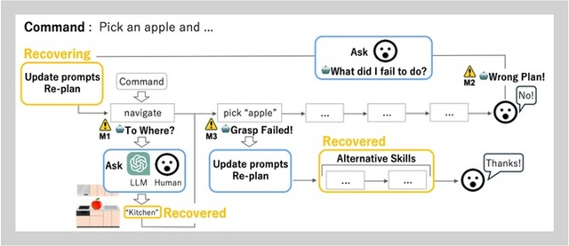

|
Mimo Shirasaka I am a third-year undergraduate student majoring in Engineering at The University of Tokyo. |

|
Research
|
|  |
Mimo Shirasaka, Tatsuya Matsushima, Soshi Tsunashima, Yuya Ikeda, Aoi Horo, So Ikoma, Chikaha Tsuji, Hikaru Wada, Tsunekazu Omija, Dai Komukai, Yutaka Matsuo, and Yusuke Iwasawa ICRA 2024 Oral, Poster, Demo arXiv / Website The self-recovery pipeline's automatic prompt updates enable failure recovery and task completion in general-purpose home robot tasks. |
{kind=link}
Projects
|

|
- Website Developed an original quadruped transformable robot from scratch in a team of four. Contribution: team lead, design, and image recognition Tech (software): Python, YOLOv5 Tech (hardware): 3D printing, Raspberry Pi 4B etc. |

|
Designed and rendered a humanoid robot from scratch as the final project for a CAD class. Tech (software): 3DCAD (Fusion) |

|
Designed the gripper and master interface for a teleoperated robot. The project was done in this course. Tech (software): 3DCAD (tinkercad) |

|
Developed an app designed to make learning STEM enjoyable, participating in an app contest hosted by The University of Electro-Communications during high school. Tech (software): Python, tkinter |
|
Source code taken from Jon Barron's site. |